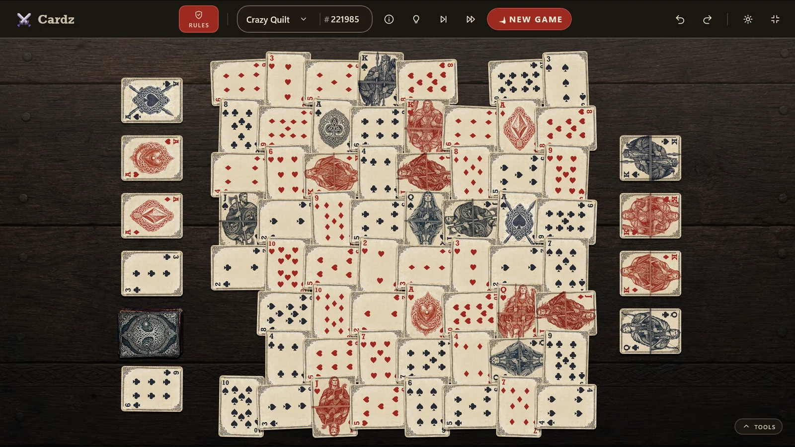
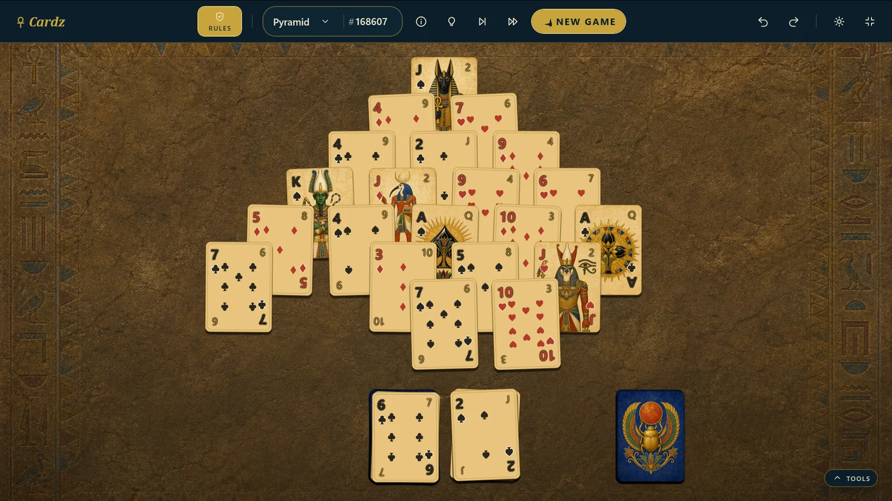

Beautiful by design
Hand-crafted decks and atmospheric tables make every game feel like a place of its own.
Rules, optional
Choose a game with rules—or start with nothing but a deck and a table. Cardz gives you the cards, the tools, and the freedom to decide the rest.

Pick your game
From the games everybody knows to ingenious solitaires worth discovering. The collection is built to keep growing.

The full collection
The heart of Cardz
Sandbox begins with a table and a deck. Move any card anywhere, invent a game as you go, or recreate one only your family knows. Twelve physical modes let you gather, spread, fish, rotate, shuffle, and reshape the cards without telling you what is allowed.
There is no
wrong move here.
Designed to feel good
Hand-crafted decks and atmospheric tables make every game feel like a place of its own.
Fluid drag, flip, and deal interactions, built for touch, pen, mouse, and keyboard.
Your game saves silently and resumes instantly. No account, no cloud, no fuss.
Screen-reader narration, full keyboard play, high contrast, and reduced motion support.
Stuck on a ruled game? A hint flashes a move you can make. Or let Cardz play it for you—or auto-play all the way to the win, planned by a real solver.
Quietly respectful
Cardz has no ads, no accounts, and no analytics. It works completely offline and never phones home. Your game stays on your device, exactly where it belongs.
Your next game is waiting